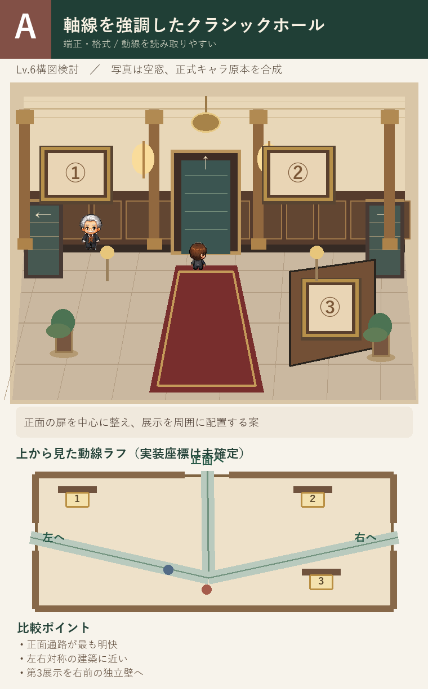
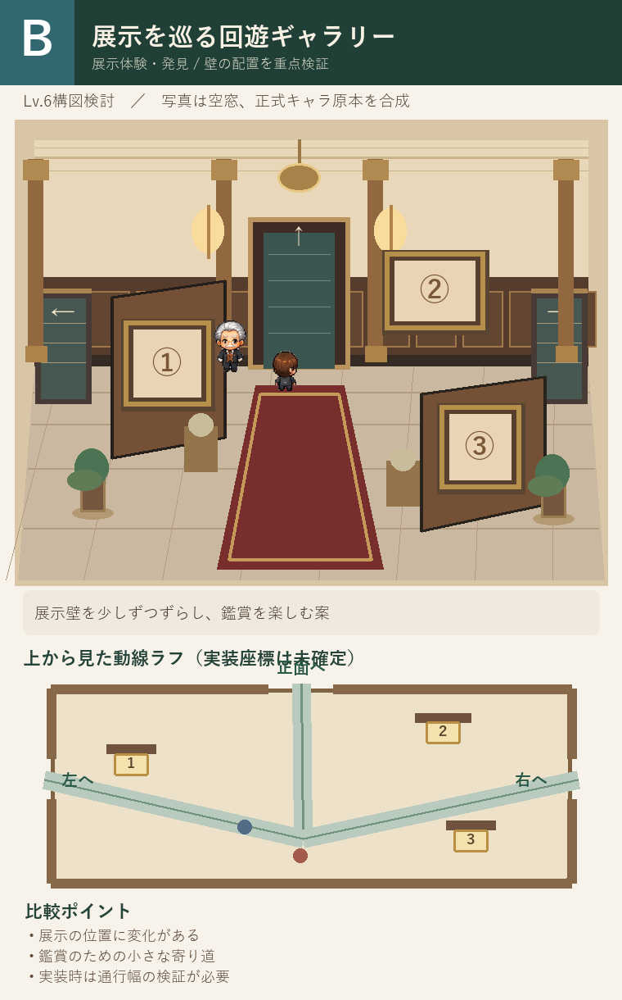
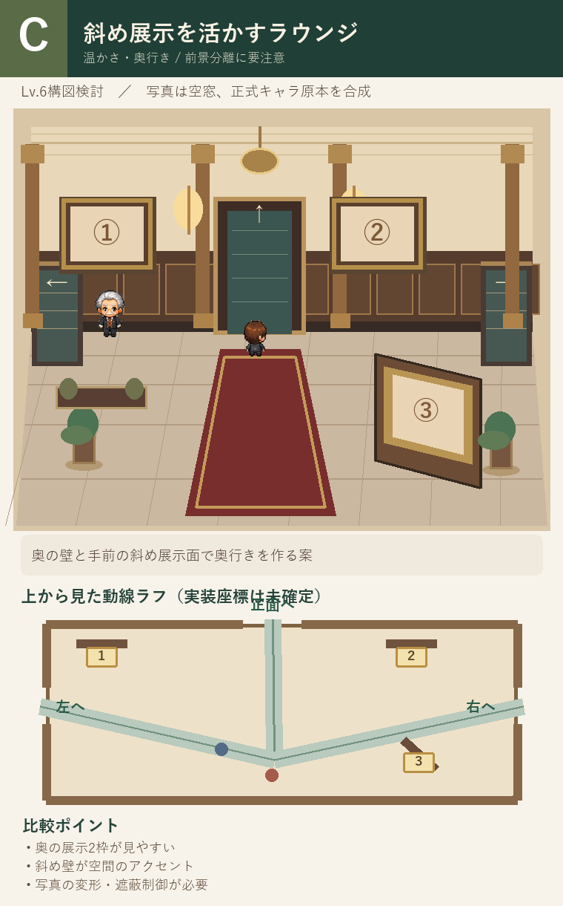

比較するのは「空間の配置」です。
左右と正面への3通路、写真展示枠3か所を共通条件にしたラフです。登場人物は正式採用済みPNGをそのまま合成しています。背景はまだ完成品質の美術ではありません。
作品枠の数字は展示位置を表し、写真を焼き込んでいるわけではありません。
左右と正面への3通路、写真展示枠3か所を共通条件にしたラフです。登場人物は正式採用済みPNGをそのまま合成しています。背景はまだ完成品質の美術ではありません。
作品枠の数字は展示位置を表し、写真を焼き込んでいるわけではありません。
A
クラシックホール型
中央軸を強調した、わかりやすいエントランス

端正な建築。3通路が明瞭。
画像を拡大 ↗B
回遊ギャラリー型
展示を巡って楽しむレイアウト

鑑賞体験に変化。通行幅の検証が必要。
画像を拡大 ↗C
斜め展示ラウンジ型
奥行きと温かさを重視したレイアウト

奥行きが魅力。斜め展示の処理が必要。
画像を拡大 ↗※構図検討段階です。写真のサイズ・遮蔽・歩行当たり判定およびLv.6の装飾品質は未確定です。既存公開ゲームは変更していません。